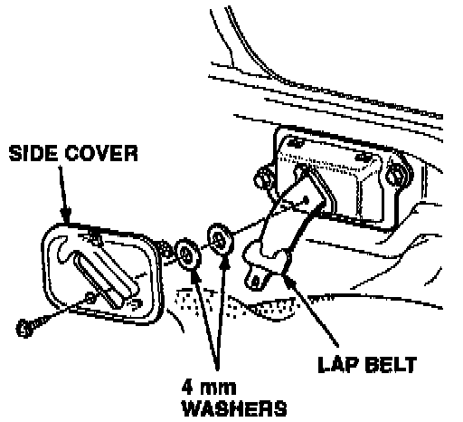

Seat Belts - Lap Belt Retracts Slowly.
January 16, 1996BULLETIN NO.
90-008
YEAR
1990
MODEL
INTEGRA
VIN APPLICATION
See VEHICLES AFFECTED
Lap Belt Retracts Slowly
(Supersedes 90-008, dated Apri1 30, 1990)
PROBLEM
The front lap belts are slow to retract.
VEHICLES AFFECTED
3-door - Thru VIN JH4DA9 ... LS0011373
4-door - Thru VIN JH4DB1 ... LS0006873
CORRECTIVE ACTION
Space the driver and passenger side covers away from the seat belt assemblies, using the washers listed under PARTS INFORMATION.
1. Slide the front seats completely forward.
2. Remove the screw securing the side cover. Gently pull out the bottom of the cover, then pull upwards to release the retaining tabs.

3. Glue the two 4 mm washers to the back of the side cover as shown, then reinstall the cover.
4. Repeat steps 1-3 to the remaining lap belt.
PARTS INFORMATION
Washer, 4 mm (4 required): P/N 94101-04800
WARRANTY CLAIM INFORMATION
In warranty:
The normal warranty applies.
Out of warranty:
Any repair performed after warranty expiration may be eligible for goodwill consideration by the District Technical Manager or your Zone Office. You must request consideration, and get a decision, before starting work.
Operation number: 854050
Flat rate time: 0.4 hour (for both sides)
Failed P/N: 81 8A0-SK7-A23ZA
* Defect code: L30 [NEW]
Contention code: B99
Template ID: 90-008A
[NEW]
*A defect code beginning with "L" indicates that the repair is covered by the Lifetime Seat Belt Warranty.